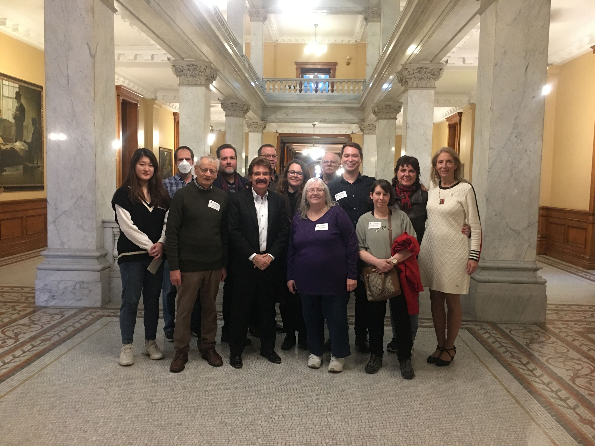
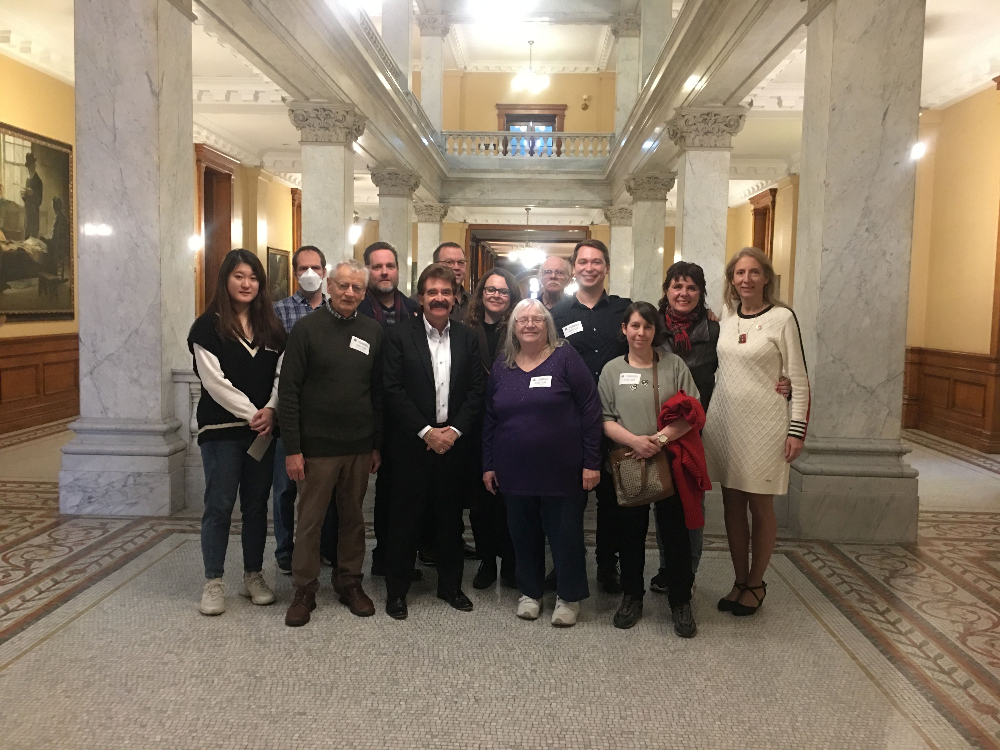

Community Leadership
My campaign is powered by years of experience leading grassroots action in Ward 8 and across Hamilton — from housing justice and union rights to climate action and democratic reform. Here's some of what I’ve built and fought for:
🏘️ Housing & Tenant Advocacy
- Elected Co-Chair of Hamilton ACORN Downtown Chapter
- Led passage of Ontario’s first Anti-Renoviction and Anti-Demoviction Bylaws, which have since been adopted in other municipalities; including Toronto and Kitchener-Waterloo
- Organized Tenant Unions and Delegated to Council at City Hall to demand improvements to housing conditions
- Site Selection Committee Member and Fundraising Organizer with the Hamilton Alliance for Tiny Shelters (HATS)
- Spearheaded campaigns for a Maximum Heat Bylaw and a Fight Against Predatory Bank Fees (NSF Fees) for low and middle income Canadians
✊ Labour, Health & Public Services
- Avid supporter of the Hamilton District Labour Council (HDLC), Workers Arts and Heritage Centre (WAHC), and a proud member of Unifor Unit 1, Local 5555
- Founding National Program Coordinator for the National Overdose Response Service (NORS) - Peer Wellness Program
- Seminar Trainer for NORS and the Substance Overdose Prevention and Education Network (SOPEN) naloxone workshops across the Greater Toronto-Hamilton Area
- Organizer with FairVote Canada, fighting to protect democratic election integrity and freedom of choice for voters
- Delegate to the Legislature and Organizer with the Ontario Health Coalition, advocating for public healthcare justice and adequate funding
- Consistently supports unionized workers in all sectors, dedicated in solidarity with the HDLC, and active advocate for stronger workplace protections
- Active member of the Hamilton Health Coalition, Ontario Health Coalition, and St. Joe’s Hospital volunteer
📣 Political Organizing & Reform
- Chair of Federal Election Planning Committee for grassroots candidates
- Delegate for FairVote Canada, promoting electoral reform and proportional representation
- Wrote national engagement toolkits for the grassroots political campaigns and trained volunteers across Canada
- Helped democratize local riding associations and increase youth, newcomer, and equity participation
🎓 Student & Youth Leadership
- Vice President of the McMaster Graduate Student Association (GSA), serving as a Fiduciary on the Board of Directors
- Reinstated and expanded mental health coverage for all students: Founding the Empower Me program
- Founded the GSA Clubs Committee to support student engagement and community building
- Oversaw intramural sports and student leagues to strengthen campus life and wellness
🎶 Arts & Culture Advocacy
- Sole Organizer of the 500-person “Here’s to Hamilton” Concert Fundraiser featuring LTtheMonk and Juno-winner Harrison Kennedy
- Volunteer organizer with Black Throne Productions, supporting local metal music and coordinating La Rhune Doomfest two years in a row
- Active supporter of Hamilton’s Hip-Hop scene and Latin dance events, helping grow grassroots cultural communities across the city
- Advocates for accessible, inclusive, and well-funded spaces for local artists and performers in Ward 8 and beyond
🌿 Local Climate & Justice Work
- Organized city-wide campaigns against renoviction, led climate justice protests, and rallied at sustainable development actions, including protecting the Greenbelt
- Volunteer with Pride Hamilton supporting LGBTQ+ communities and actions across Ontario
- YWCA Gala Speaker Coordinator and Photographer


 
